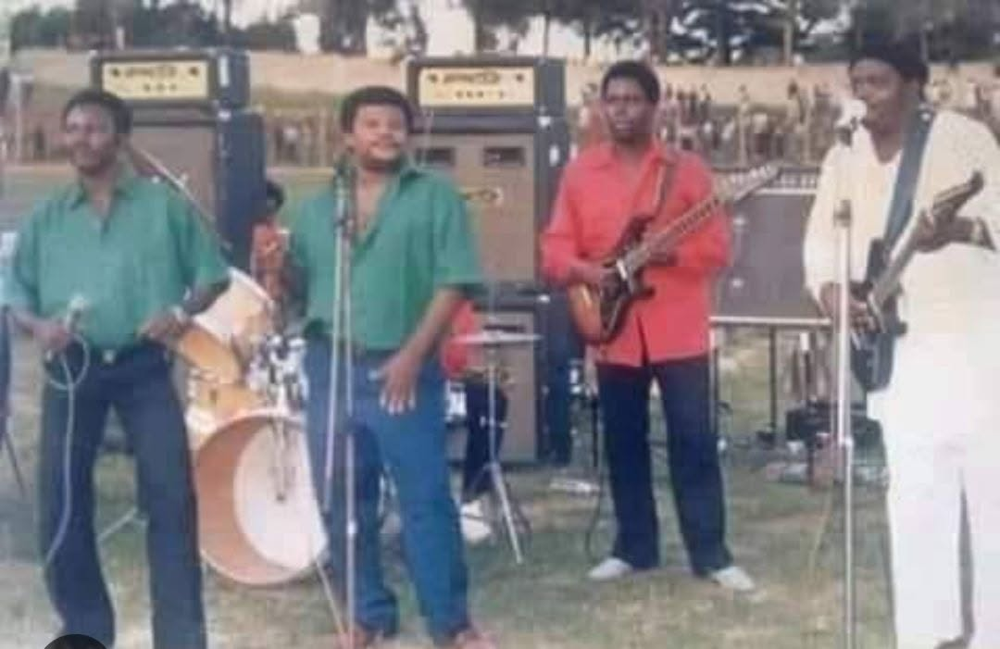
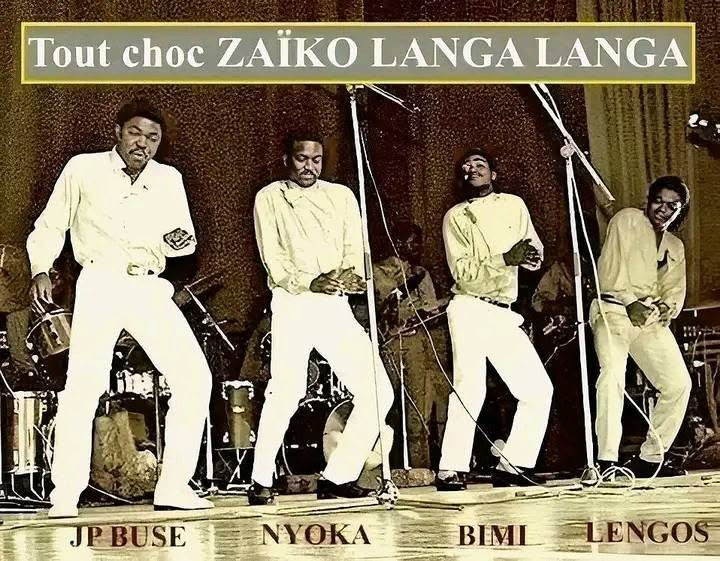

Kinshasa · founded 1956
OK Jazz
Franco Luambo and generations of musicians built one of the most influential orchestras in Congolese music, known for intricate guitar work and rich vocal interplay.
Explore OK JazzThe sound behind the stories
Meet the groups whose musicians, arrangements and restless creativity shaped Congolese rumba, soukous and the wider African soundscape.
Congo & the rumba tradition

Kinshasa · founded 1956
Franco Luambo and generations of musicians built one of the most influential orchestras in Congolese music, known for intricate guitar work and rich vocal interplay.
Explore OK JazzKinshasa · founded 1953
Founded by Grand Kallé, African Jazz helped bring modern Congolese rumba to a broad audience during a defining period in the country's cultural history.
Explore African JazzKinshasa · formed 1963
Formed by musicians including Tabu Ley Rochereau, Dr. Nico Kasanda and Roger Izeidi, African Fiesta became an influential force in Congolese rumba. Its legacy continued through African Fiesta National and African Fiesta Sukisa.
Explore the African Fiesta ArchiveKinshasa · founded 1969

Discover the history of Zaïko Langa Langa, its founders, musicians, recordings, musical innovations and the influential groups that emerged from its musical family.
Explore the Zaïko ArchiveKinshasa · formed 1969
Founded by Georges Kiamuangana Mateta, popularly known as Verckys, Orchestra Vévé became an important force in Congolese rumba and soukous. Its legacy includes influential recordings, talented vocalists and the wider Éditions Vévé music enterprise.
Explore the Orchestra Vévé ArchiveA celebrated ensemble
Led by Tabu Ley Rochereau, Afrisa International developed a polished, melodic sound and helped carry Congolese music to new listeners.
Meet Tabu LeyAcross generations
From Bella Bella and Lipua-Lipua to later soukous groups, Congo's band history is a story of collaboration, competition and constant reinvention.
Explore the historyGo deeper
Explore the artists, band histories and musical eras that connect these orchestras.
Meet the legends